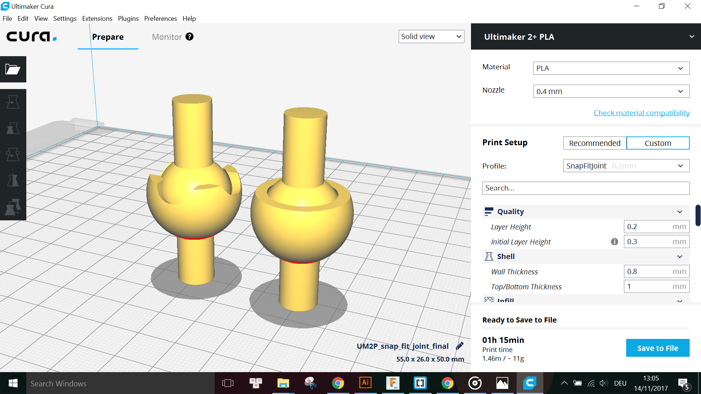

The assignment of this week is to 3D print an object that is complex enough such that it cannot be done by alternatives like laser cutting or CNC milling.
I personally experimented with printing ball joints, modular components and my Jack-O-Lantern design from Week 2 - 2D & 3D design.
I designed a ball joint module in Fusion with a tolerance of 0.3mm:
Because my model consists of more than 1 Bodies, and I would like to export both Bodies as a whole to print together, I have to right click on the Component containing both Bodies (in this case, it is at the top of the BROWSER) and choose Save as STL:
Note that all other Bodies, Components, Sketches, etc. should be disabled so that they are not exported together with the desired model.
I also altered the design a little bit because I would like to test print another joint with a bit more degree of rotation freedom:

Again, I exported this model as STL to be printed later with the previous one for comparison.
Another model I designed in Fusion are some modular components which can be scaled up or down to build large or small flexible structure. The components look like this:
I exported this and also my Jack-O-Lantern design from Week 2 as STLs:
Using the free slicing software Cura from Ultimaker, I sliced my models with following settings:
Printer: Ultimaker 2+
Material: PLA
Nozzle: 0.4mm
Layer Height: 0.2mm
Initial Layer Height: 0.3mm
Wall Thickness: 0.8mm
Top/Bottom Thickness: 1.0mm
Infill Density: 20%
Infill Pattern: Grid
Enable Retraction: Yes
Print Speed: 60 mm/s
Travel Speed: 150 mm/s
Enable Cooling: Yes
Generate Support: Yes
Support Placement: Touching Buildplate
Support Overhang Angle: 50°
Support Patterns: Lines
Support Density: 8%
Support Z Distance: 0.3mm
Support X/Y Distance: 1.0mm
Buildplate Adhesion Type: Brim
Brim Width: 4mm
Print Sequence: All at Once
Model Scale: 50% (uniform scale)
The estimated total printing time for this was 1 hour 22 minutes. The material I used was Black PLA 2.85mm from Innofil 3D.
Printer: Ultimaker 2+
Material: PLA
Nozzle: 0.6mm
Layer Height: 0.2mm
Initial Layer Height: 0.3mm
Wall Thickness: 1.0mm
Top/Bottom Thickness: 0.8mm
Infill Density: 30%
Infill Pattern: Grid
Enable Retraction: Yes
Print Speed: 50 mm/s
Travel Speed: 150 mm/s
Enable Cooling: Yes
Generate Support: No
Buildplate Adhesion Type: Brim
Brim Width: 4mm
Print Sequence: All at Once
Model Scale: None (original size)
The estimated total printing time for this was 1 hour 34 minutes. The material I used was Silver PLA 2.85mm from Innofil 3D.
Printer: Ultimaker 2 Extended+
Material: PLA
Nozzle: 0.8mm
Layer Height: 0.2mm
Initial Layer Height: 0.3mm
Wall Thickness: 0.8mm
Top/Bottom Thickness: 0.8mm
Infill Density: 20%
Infill Pattern: Grid
Enable Retraction: Yes
Print Speed: 50 mm/s
Travel Speed: 100 mm/s
Enable Cooling: Yes
Generate Support: Yes
Support Placement: Touching Buildplate
Support Overhang Angle: 50°
Support Patterns: Zig Zag
Support Density: 5%
Support Z Distance: 0.1mm
Support X/Y Distance: 0.7mm
Buildplate Adhesion Type: Brim
Brim Width: 5mm
Print Sequence: All at Once
Model Scale: 50% (uniform scale)
The estimated total printing time for this was 1 hour 40 minutes. The material I used was White PLA 2.85mm from Innofil 3D.
Nozzle temperature: 210°C
Buildplate temperature: 60°C
Here are some photos during printing and the final results:
The layer resolution of 0.2mm looks fine for this print and there was no problem encountered during printing.
And this was the final result of the ball joints:
For the joint with more degree of freedom, the print was not smooth at the indented curved faces while for the other one, it is also not smooth at the top surface of the outer ball. This is probably because of my arrangement of the models on the buildplate. I should have rotated it 180° vertically like this for printing:
Due to lack of time and unavailability of printers, I could not reprint the joints with the new arrangement.
This print also did not cause any problem while printing. The final results looked like this:
Although the printing was not problematic, the final result was not completely satisfying because some of the joints between the modules were loose and thus the structure falls apart sometimes. This will be discussed again later in Section 4 - Problems & Troubleshooting.
This print was done togehter with Philip Hubatsch, another participant of the course, with his model on the left and mine on the right. This image was taken from the first trial and we did encountered some problems during the printing, which are discussed later in Section 4. The final result of my Jack-O-Lantern looked like this:
The top of the pumpkin looked very smooth, however, there was an "unexpected" support inside the body of the pumpkin which I could not remove at the end because it is all enclosed. The reason for this is also discussed in Section 4.
For all of the models, I encountered a few problems. Some of them are problems with the resultant print which means I have to modify the design in Fusion and print the model again, some are problems during the printing process.
However, after printing, the joint was not held together as expected:
Thus I had to modify the design so the degree of freedom is decreased but the joint is actually held together.
I reprinted the new modules using the same settings but now with White PLA 2.85mm.
This time the structure does not all apart at all anymore. YAY!!!
Another problem was the "unexpected" support inside the pumpkin's body which I was not able to remove at the end. This was because for my slicer settings, I chose Support type as "Touching Buildplate" thus the preview for the layers did not show any support inside the pumpkin. However, when printing together with Philip, I forgot to set this and thus the support type was "Everywhere" instead. Hence, there was support inside the pumpkin as seen in the final print.
As a result, I learned that it is a bit more difficult to troubleshoot when printing multiple independent objects together, also because of the limitations of the Cura software or the Ultimaker printer that we cannot have different printing settings for separate models on the same buildplate.
Here are the STL files, Cura project files with all settings as well as G-code files for each model: